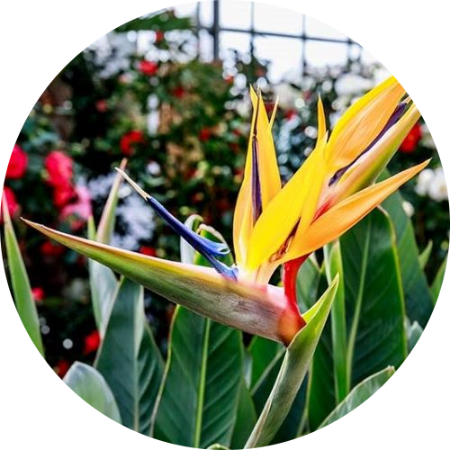

Strelitzia Reginae
Water: Replace water every 1-2 weeks.
The Strelitzia is the perfect plant for room temperatures. Plant should receive regular sunlight without directly pointing at it. Consider giving it partial shade to avoid any damages on the flower. Soil should be kept regularly moist during growing season and allow soil to become dry before watering during the rest of the year. Water every 1-2 weeks and remove any excess water sitting on the pot.